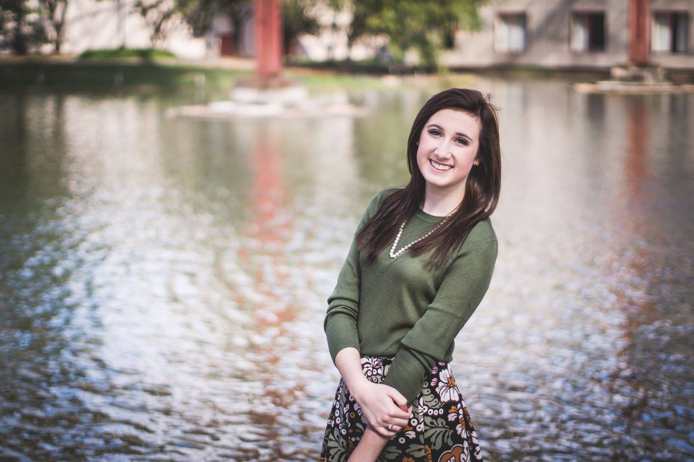

I'm a senior at the University of Missouri studying convergence journalism and political science. This spring, I will be working as the assistant editor for the community outreach desk at the Columbia Missourian our local paper here in Columbia that partners with the university.
During fall 2019, I worked on the community outreach team as a content creator, which included drafing social media posts, compiling monthly analytics reports and contributing to the 3rd Annual Columbia Missourian Progress Awards as a videographer and reporter. I also was a supervising editor for the Missouri School of Journalism's Convergence Journalism program, where I guided, assisted and evaluated 30 reporters through the reporting, producing and publication process.
I spent summer 2019 in Washington D.C. as a social media and digital marketing intern with, Smithsonian Associates the nonprofit education branch of the Smithsonian Institution. It was here that I discovered my passion for audience engagement and figuring out how I could bring my skills as a journalist to the digital content side of an organization.
I grew up in a small town south of St. Louis, so Imo's Pizza, Cardinals baseball and the Gateway Arch are in my blood. On a good day, I drink a large coffee and on a bad one, I drink multiple. I will always accept tickets to see live theatre, hear a guest lecture or take a class on something new. I am a strong believer that respectful debates build character and love to buy 1000+ piece puzzles only to complete them in one sitting.